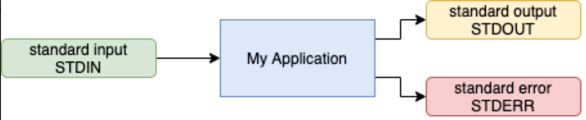
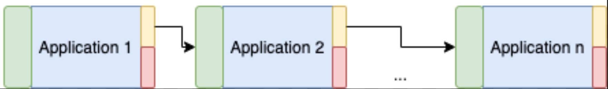

--- # INFO 450 Spring 2021 # Week 3 ## Starting the Python --- # Homework Review Was it hard? Want to talk about it? --- # Before we Python, let's talk Throwing out words you may not understand Lots of new concepts that I may go over quickly Lots of assumptions on what you know from INFO 350 ## Stop me at any time! --- # Data We will be talking about data a lot Programming is all about performing actions.. on data Basic Data Types: * Integers - whole numbers, positive, negative, 0 * floating point numbers - precision beyond whole numbers * strings - characters - "See spot run" * lists - Ordered collection of values * sets - Unordered collection of UNIQUE values * dictionaries - Mapping data type: ("key": "value") * tuples - immutable ordered collection of values --- # Lists vs Sets When do we use a list? When do we use a set? Do we need to track the same value more than ones? Lists Does order matter? Lists --- # Let's try it out If I need to keep track of people in a line for the movie theater, list or set? --- # more If I have to keep track of every type of soda the store carries? ok.... --- # Writing Python Primarily, we will be using a command line, Visual Studio Code and Anaconda. If you haven't gotten your local Python environment to work yet, you can prototype some code here: https://www.onlinegdb.com/online_python_compiler but assigments still must be in by the due date, via Github, if that's what's prescribed --- # What does a Python program look like? ```python import logging import json # create logger logging.basicConfig(format='%(levelname)s: %(message)s', level=logging.DEBUG) def printThingAsJSON(thing): print(json.dumps(thing)) if __name__ == "__main__": output = {"Hi": "Mom"} printThingAsJSON(output) logging.debug("Completed.") ``` <a href="./first.py" target="_blank">first.py</a> --- # Line by line ```python import logging import json ``` * Importing libraries/packages that we will use in this program. * Logging = Logging framework with log levels, DEBUG, INFO, WARNING, ERROR, CRITICAL * JSON = Convert JSON (Javascript Object Notation) to and from Python objects. Logging is a means of tracking events that happen when some software runs. The software’s developer adds logging calls to their code to indicate that certain events have occurred. An event is described by a descriptive message which can optionally contain variable data (i.e. data that is potentially different for each occurrence of the event). Events also have an importance which the developer ascribes to the event; the importance can also be called the level or severity. <a href="https://docs.python.org/3/howto/logging.html" target="_blank">https://docs.python.org/3/howto/logging.html</a> --- # Line by line (cont.) ```python # create logger logging.basicConfig(format='%(levelname)s: %(message)s', level=logging.DEBUG) ``` Quick set up of logging formatter and level. Setting to DEBUG to show all levels. Quick format to see the output --- # Line by line (cont.) ```python def print_things_as_json(thing): print(json.dumps(thing)) ``` def - Defining a function: print_things_as_json (thing) a required parameter called thing print - Sends data to the standard output. The data in this case will be the string returned from the 'json.dumps' function. json.dumps - Package json. Function dumps --- # Line by line (cont.) ```python if __name__ == "__main__": output = {"Hi": "Mom"} print_things_as_json(output) logging.debug("Completed.") ``` Main function. Output is a variable of type 'dict' - we'll get to that soon Calling the function 'print_things_as_json', passing in the dict output Logging the message 'Completed' to the logging framework --- # Executed ```bash $ python3 first.py {"Hi": "Mom"} DEBUG: Completed. ``` --- # Your Turn Get the following program running. Don't worry about a virtual environment / pip / pipenv / anaconda. Filename can be "my_first.py" ```python """ This is my first python program. """ import logging logging.basicConfig(format="%(levelname)s: %(message)s", level=logging.DEBUG) my_name = "Chris" # But you can put your own name in here. output = f"Hello, {my_name}" logging.debug(output) ``` Run it on your command line: ```bash $ python3 my_first.py DEBUG: Hello, Chris ``` --- # Definitions and notes Python strings can either be surrounded by " or ' The main function of python is weird, but makes sense eventually: ``` if __name__ == "__main__" ``` print() - sends data to the programs STDOUT (standard out). Do not overuse print for 'DEBUG' type messages. ALWAYS use the LOGGING framework! You're too smart for a basic Hello World program, but if you want to see it, here it is: ```python print("Hello, World!") ``` or maybe ```python if __name__ == "__main__": print("Hello, World!") ``` --- # Logging vs print() All computer programs have standard ways of interacting with the operating system standard input, standard output and standard error (another output)  Applications, Operating Systems, etc allow chaining of programs.  Stay in the habit of using the logging framework for debugging information, but use 'print' for intentional stdio --- # Spaces or tabs? Code sections in python are organized by whitespace, not by braces, etc. https://www.python.org/dev/peps/pep-0008/#tabs-or-spaces Python doesn't use curly braces like other programming languages. Python programs are organized around whitespace. Levels of embedding are just 'more white space' In this class, we will use 4 spaces for our indentation ```python def some_function(parameter): logging.debug("Something") if True: logging.debug("Yes it's true.") else: logging.debug("No it's not true.") for x in range(10): if x % 2 == 0: print("Yes it's an even number too.") ``` * You don't have to understand that code yet.. but know it. --- # Variables Variables are <i>labels</i> that store data. Variables are meant to store state for use within your program. Python has a few rules for naming variables: (pg 17) * Names can only hold letters, numbers and underscores. * Spaces are not allowed in variable names * Do not use Python keywords (pg 471) * Variables must be declared before they're access * Variables can be assigned a value when they're declared * Variable names should be lowercase, with words separated by underscores as necessary to improve readability. --- # Dynamic typing Python is a dynamically typed language. Your code doesn't have to know ahead of time what data type variables are. C++ ```c++ int x = 0; char[] str = "Some string."; str = 12312; // not sure what'd happen ``` vs Python ```python x = 0 str = "Some String" str = 12312 ``` --- # Variable types * Strings * Floats * Integers * Constants: No 'constant' concept in Python. Best practices, constants should be ALL CAPITAL LETTERS e.g. ```python PI = 3.1415 ``` --- # Comments Quick note before diving deep into Strings. Comments in Python are single line comments, always. Precede the line with # ```python # This is a comment x = 123 print(x) # Here's another comment. ``` --- # Strings As previously stated, Strings can be built with single or double quotes. ```python first_string = "This is a string." second_string = 'This is a string too' # Next line, my slides dont show it well, but, its valid code. third_string = "This is how to embed a \" within a string" # bad_string = "This is not valid' x = len(second_string) # len() gets the length of the string ``` * Strings can be thought of as 'lists' of characters, much like C+ --- # Manipulation * Multiple functions to manipulate a string * upper * lower * title ```python >>> str = "cat in the hat" >>> str.upper() 'CAT IN THE HAT' >>> str.lower() 'cat in the hat' >>> str.title() 'Cat In The Hat' ``` You can run an interactive python shell on your command line by typing : ```bash python3 # Depending on your OS, it may be different ``` --- # Tabs and Newlines (oh my) Embed a tab or newline character in your string. Simple! ```python >>> a = "first line\nsecond line" >>> a 'first line\nsecond line' >>> print(a) first line second line >>> a = "what about \t tab separated\tstrings" >>> a 'what about \t tab separated\tstrings' >>> print(a) what about tab separated strings ``` --- # Stripping Remove whitespace before and/or after ```bash >>> str = " this is a string " >>> str.lstrip() 'this is a string ' >>> str.rstrip() ' this is a string' >>> str.strip() 'this is a string' ``` * lstrip() - Left strip, remove white space on the left * rstrip() - Right strip, remove whitespace on the right * strip() - Strip, remove whitespace left and right --- # Formatted Strings Best thing since sliced bread. Book says: "Using Variables In Strings" (pg 21) Old way: ```python >>> name = 'chris' >>> last = 'fauerbach' >>> "{} {}".format(name, last) 'chris fauerbach' # Looks reasonable ``` Formatted Strings - the new magic ```python >>> name = "chris" >>> last = "fauerbach" >>> f"{name} {last}" 'chris fauerbach' >>> f"{name.upper()} {last.title()}" 'CHRIS Fauerbach' ``` --- # Sub String Just kidding, that's chapter 3.. we'll get to that next week. --- # Numbers This will be quicker, since they're just numbers Integers or floats Cast between the two ```python >>> x = 3.14 >>> y = int(x) >>> print(x) 3.14 >>> print(y) 3 >>> x = float(y) >>> x 3.0 ``` --- # Mathematics +, -, *, / ```python >>> 2 + 2 4 >>> 2 - 0 2 >>> 2 * 2 4 >>> 2 / 2 1.0 ``` with variables, and shortcuts ```python >>> x = 3 >>> x 3 >>> x += 3 >>> x 6 >>> x -= 2 >>> x 4 ``` --- # Exponents ```python >>> 4 ** 2 16 >>> 4 ** 3 64 >>> x = 3 >>> x = x ** 2 >>> x 9 ``` --- # Modulus - % Division's remainder ```python >>> x = 13 >>> y = x % 2 >>> y 1 >>> y = x % 5 >>> y 3 ``` --- # Multiple Assigments This is how you can assign multiple values to multiple variables on one line. Best practices, really only use this for returning multiple values from a function: ```python >>> a, b, c = 1, 2, 3 >>> b 2 >>> c 3 >>> a 1 ``` ```python >>> d, e, f = 1, "dog", 3.14 >>> d 1 >>> e 'dog' >>> f 3.14 ``` --- # Homework For your homework, fork this repository to your account. https://github.com/vcu-chfauerbach/root_homework1 Updated the 'README.md' file to change the URLs for the github actions: https://github.com/vcu-chfauerbach/root_homework1/workflows/Pylint/badge.svg should become https://github.com/YOUR_GITHUB_ACCOUNT/root_homework1/workflows/Pylint/badge.svg Edit the file ./homework1/hw1.py to make the three github actions pass. When they pass, and you see the updated badges in your repository, send me a link to the repository, like: https://github.com/vcu-chfauerbach/root_homework1 but https://github.com/YOUR_GITHUB_ACCOUNT/root_homework1 --- # Next Week * Functions * Lists * Dicts * Tuples * Input/Output ---